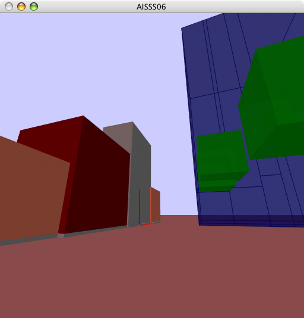 Sitting in the park, watching the geometry getting refined with each level of detail.
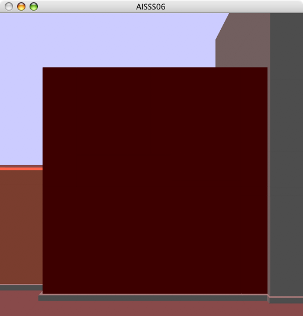 Up front. Even the doorknob makes an appearance at the end.
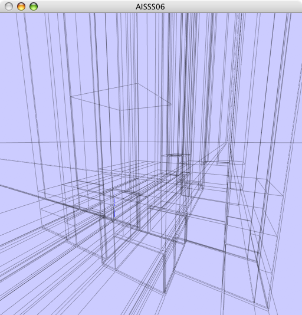 This movie shows the structure of the bsp-tree for different levels of detail.
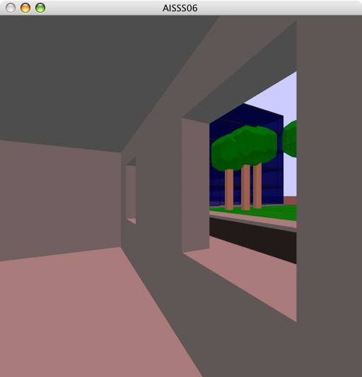 An inside view.
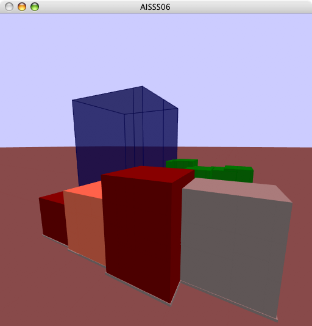 Watch as even the rooms get filled with stuff.
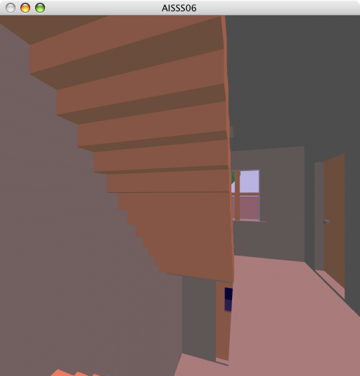 The staircase is fully walkable.
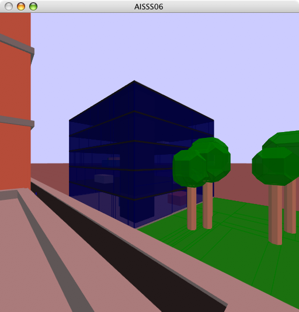 On the rooftop.
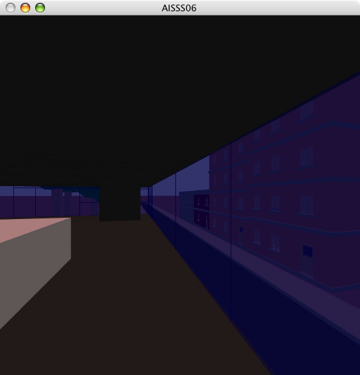 Inside the glasshouse.
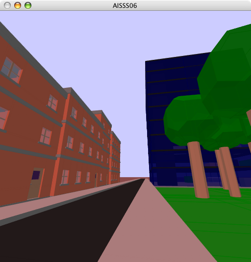 Variation 1
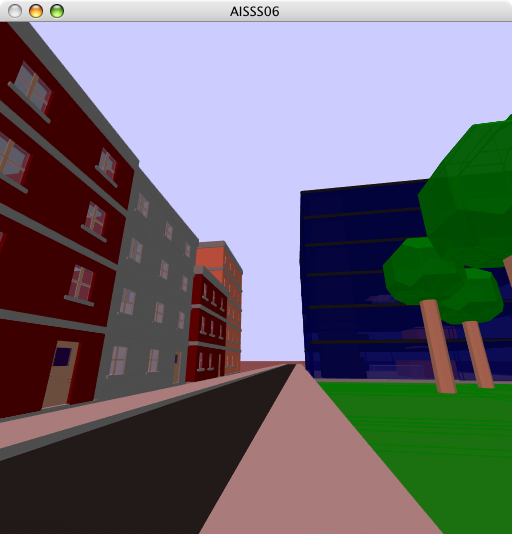 Variation 2
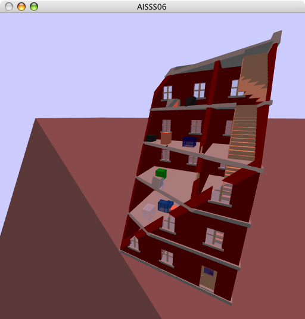
Constructive Solid Geometry
Although, in this case, it's more of a DSG...